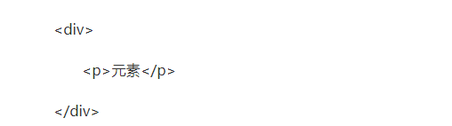

分享人：周能
目录
1.背景介绍
2.知识剖析
3.常见问题
4.解决方案
5.编码实战
6.扩展思考
7.参考文献
8.更多讨论
JavaScript 创建动态页面。事件是可以被 JavaScript 侦测到的行为。 网页中的每个元素都可以产生某些可以触发 JavaScript 函数或程序的事件。
比如说，当用户单击按钮或者提交表单数据时，就发生一个鼠标单击（onclick）事件，需要浏览器做出处理，返回给用户一个结果。
当事件发生后，这个事件就要开始传播(从里到外或者从外向里)。为什么要传播呢？因为事件源本身（可能）并没有处理事件的能力，即处理事件的函数（方法）并未绑定在该事件源上。例如我们点击一个按钮时，就会产生一个click事件，但这个按钮本身可能不能处理这个事件，事件必须从这个按钮传播出去，从而到达能够处理这个事件的代码中（例如我们给按钮的onclick属性赋一个函数的名字，就是让这个函数去处理该按钮的click事件），或者按钮的父级绑定有事件函数，当该点击事件发生在按钮上，按钮本身并无处理事件函数，则传播到父级去处理。
事件冒泡阶段：事件从事件目标(target)开始，往上冒泡直到页面的最上一级标签。
假设一个元素div，它有一个下级元素p。
这两个元素都绑定了click事件，如果用户点击了p，它在div和p上都触发了click事件
当你使用事件冒泡时，子级元素先触发，父级元素后触发，即p先触发，div后触发。
很多的网页元素都会有默认事件的行为，比如说当你点击一下超链接a标签的时候，它会有一个跳转的行为；当你在网页上点鼠标右键时会出现一个右键菜；当你在一个form表单里点击提交按钮时网页会产生提交行为并刷新网页，当你网页上滚动鼠标滚轮时，网页的滚动条会动等等。这些都叫事件的默认行为
如何阻止事件冒泡
如何阻止默认事件
EVENT.STOPPROPAGATION()
event.cancelBubble = true;
return false;
event.preventDefault();
event.returnValue=false;
return false;
1、return false可以阻止事件冒泡，也可以阻止默认事件
2、不是所有的事件都能冒泡,blur、focus、load、unload这些事件不能冒泡
3、事件冒泡作用，他允许多个操作被集中处理（把事件处理器添加到一个父级元素上，避免把事件处理器添加到多个子级元素上），它还可以让你在对象层的不同级别捕获事件。
感谢大家观看
BY : 周能